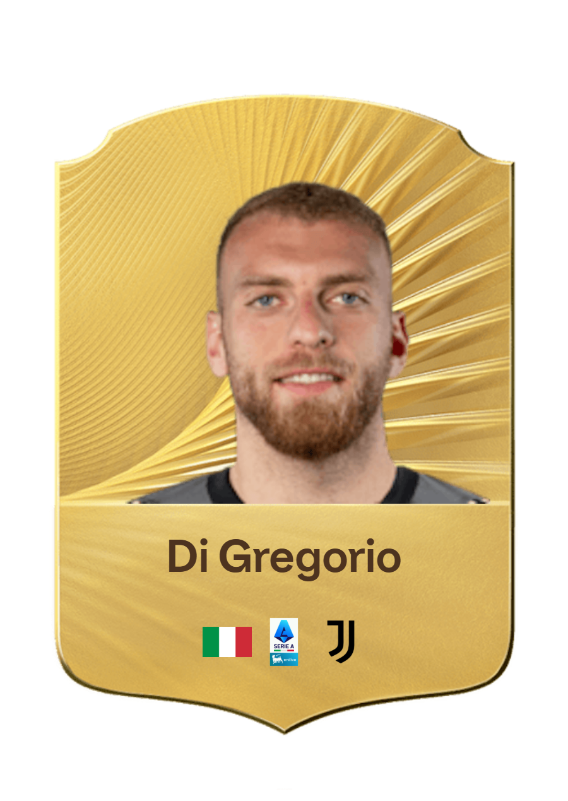
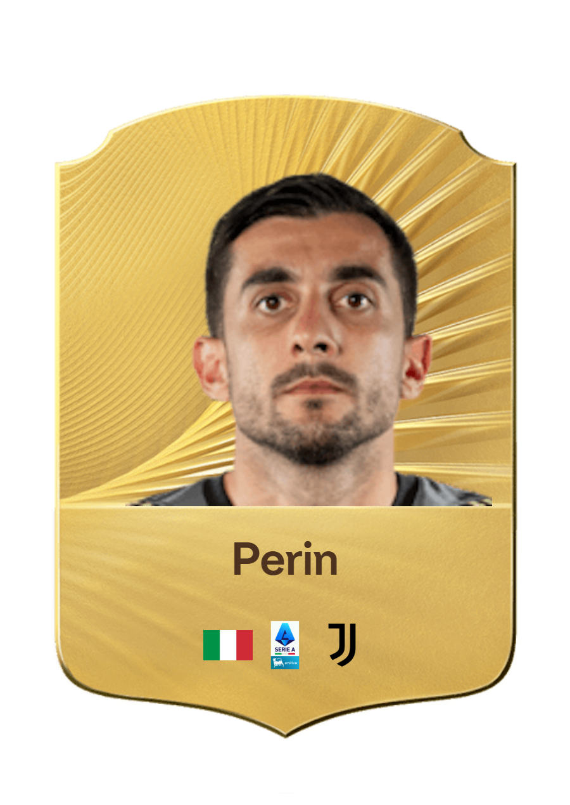
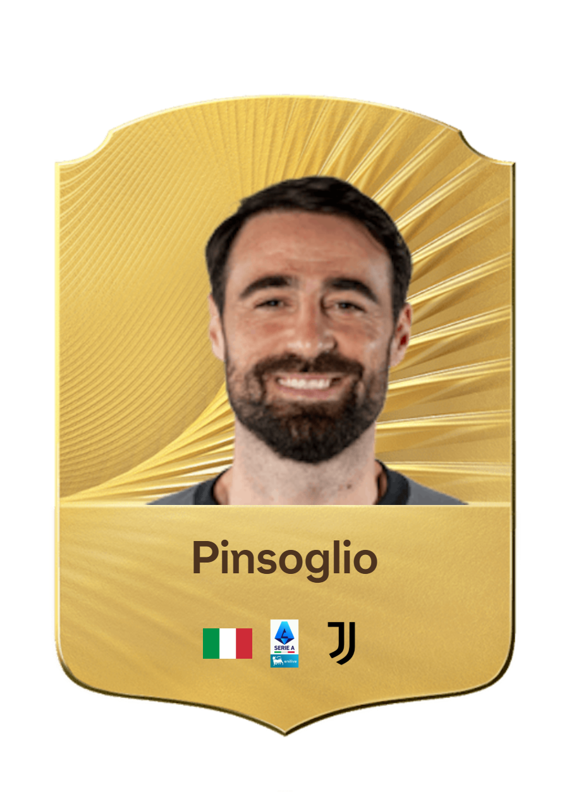

I portieri della Juventus FC rappresentano l’ultimo baluardo della squadra e svolgono un ruolo fondamentale nella solidità difensiva. Dotati di riflessi straordinari, grande senso della posizione e una mentalità forte, proteggono la porta bianconera in ogni partita. La loro capacità di dare sicurezza alla difesa e di avviare azioni offensive attraverso impostazioni precise li rende elementi fondamentali nella costruzione del gioco.
Arrivato alla Juventus nel 2024, Michele Di Gregorio è un portiere italiano che indossa la maglia numero 16. Si distingue per i suoi riflessi, la sua esplosività e la sua sicurezza tra i pali.

Arrivato alla Juventus nel 2018, Mattia Perin è un portiere italiano che indossa la maglia numero 1. Si distingue per i suoi riflessi, la sua esperienza e la sua affidabilità tra i pali.

Arrivato alla Juventus nel 2014, Carlo Pinsoglio è un portiere italiano che indossa la maglia numero 23. Si distingue per la sua esperienza, la sua leadership e il suo spirito di squadra.
